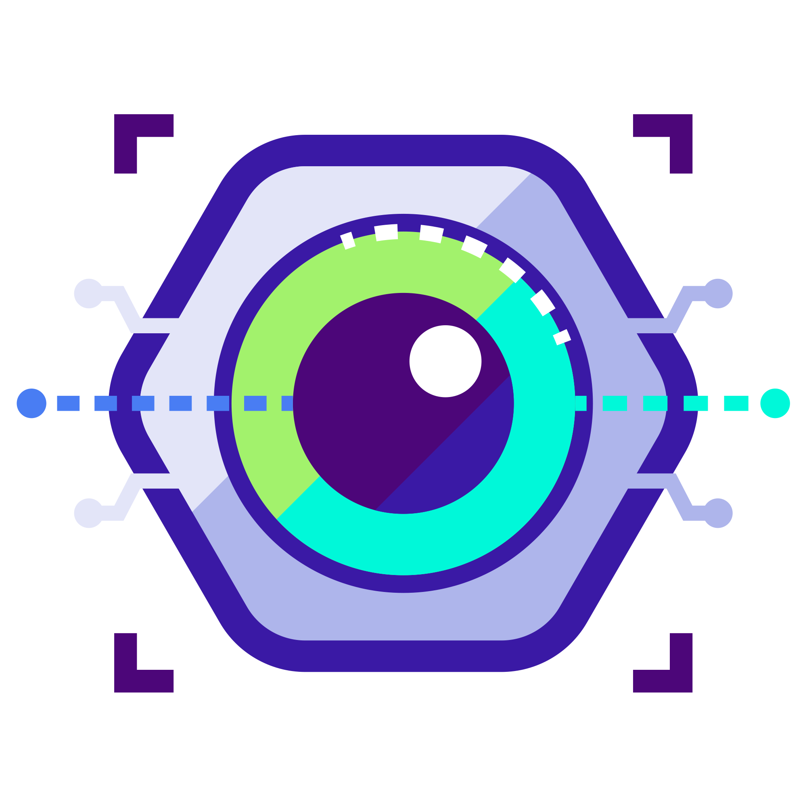

Bienvenido al sistema de reconocimiento ocular SCANEYE.
Aqui conoceras mas acerca de nuestro maravilloso proyecto, como funciona y como puedes descargarlo entre mucho mas

SCANEYE como proyecto
SCANEYE es un sistema de control de acceso creado con librerias de Python,el cual maneja interfaces
llamtivas y faciles al publico creadas con Tkinter y diseñadas en base a un estilo futurista.
Las interfaces poseen un menu, en el cual tu podras elegir si quieres ingresarte o verificar tu control
de acceso!, todos estos datos de registro quedaran almacenados dentro de una base de datos 100% segura!.
Pero eso no es todo lo que hace el proyecto, cuando se activa la camara del reconocimiento el proyecto busca
un 100% de coincidencia en los datos almacenados con los de la camar en tiempo real evitando que cualquiera
pueda acceder.
Aqui encontraras el paso a paso de cada parte ya sea de archivos que conforma nuestro proyecto
imagenes archivos read.me atributos y distribuciones
y por supuesto la descarga de nuestro proyecto ejecutable.
Manual de usuario
Es un documento esencial que guíara a nuestros usuarios sobre cómo utilizar nuestro sistema lo esencial
para que pueda ser ejecutado en tu dispositivo con
comunicación técnica destinado a dar asistencia a las personas que utilizan el sistema en particular.
Manual de programador
Nuestro manual de programador contiene Información detallada y precisa sobre el funcionamiento interno de un software, lo que facilita su diseño, implementación y uso. En este manual, se incluye información sobre la arquitectura del software, algoritmos, estructuras de datos, interfaces de programación, requisitos del sistema, procedimientos de instalación, pruebas, depuración, estándares de codificación y patrones de diseño.
Lo que nos caracteriza
Verificación Automática
El usuario no va necesitar ingresar manualmente a la hora de verificar su entrada y salida
Seguridad y Control de Acceso
SCANEYE garantiza un acceso seguro a las áreas de trabajo, ya que solo las personas autorizadas
cuya retina esté registrada en la base de datos, pueden ingresar.
Base de Datos Centralizada
Los datos de los usuarios, incluidas las imágenes de sus retinas, se almacenan en una base de datos MySQL.
La información se actualiza en tiempo real y puede ser supervisada por un administrador de forma remota.
Interfaz Grafica Intituiva
Interfaz Gráfica Intuitiva : La interfaz gráfica, creada con Tkinter, es fácil de usar,
con botones y campos de entrada claros para registrar o verificar a los usuarios.
También incluye imágenes personalizadas que mejoran la experiencia del usuario.
El uso de empresa es bastante amplio porque puede utilizarse como un resgistro de
cada empleado para que se conosca la hora de salida y entrada y se obtenga un monitoreo de cada empleado.
El uso de manera Institucional abre una amplia manera uso para que los alumnos y profesores
como personal administrativo pueda ser sensoriado y registrado por un director y llevar un control de cada alumno o personal.
EL siguiente uso es de manera mas automatizada con lockers que pueden almacenar ya sea objectos
o estar incluso en un local para el uso seguro de este almacenamiento.
Abre una gran maneras de usos como escolar personal para retarte a ti mismo ah seguir con el arte de programar,
de maner de una rutina de salud ocular
o hasta en casa este proyecto varia y amplia muchas formas de uso.